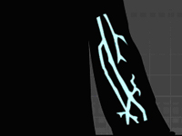
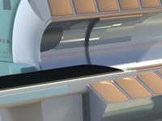
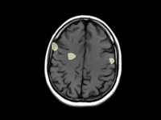
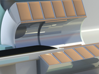
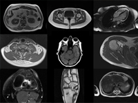

Estudio de la vascularización anatómica basado en la diferente velocidad de las estructuras con movimiento o flujo de las estáticas.

Ángulo de vuelta
Medida del giro del vector magnético del imán de RM tras someterse a una frecuencia de radiofrecuencia.

Anulación del momento de gradiente
Mecanismo para anular los artefactos producidos por estructuras en movimiento.
Artefacto
Se define como artefacto a cualquier alteración en la imagen adquirida, que no se corresponde con una estructura anatómica real.

Bobina
Estructura en forma espiroidea a través de la cual el paso de una corriente eléctrica induce un campo magnético.

Campo de visión
Porción o segmento de territorio anatómico que será estudiado en el protocolo.

Campo magnético de gradiente inducido
Campo magnético que cambia de intensidad en una dirección dada; es necesario para seleccionar una región de la imagen selección de corte y para codificar la localización de RM.
Cine
Múltiples imágenes en tiempo real, manifestando movimiento.
Criógeno
Se denomina a la sustancia empleada como refrigerante o que genera frío.
Gradiente de campo magnético
Amplitud de intensidad del campo magnético distribuido a lo largo del espacio alrededor del origen.
Pulso de gradiente
Secuencia que emplea la aplicación de una onda de radiofrecuencia de duración muy corta causando un gradiente magnético.
Pulso de radiofrecuencia
Onda de radiofrecuencia emitida para alterar el campo magnético basal.
Sincronización
Método para ajustar determinados ritmos corporales como el movimiento respiratorio o cardiaco con la secuencia de inicio de adquisición de imágenes.
Transformada de Fourier
Complejo análisis matemático mediante el cual se puede cuantificar y transformar la señal eléctrica liberada en una secuencia en una imagen.